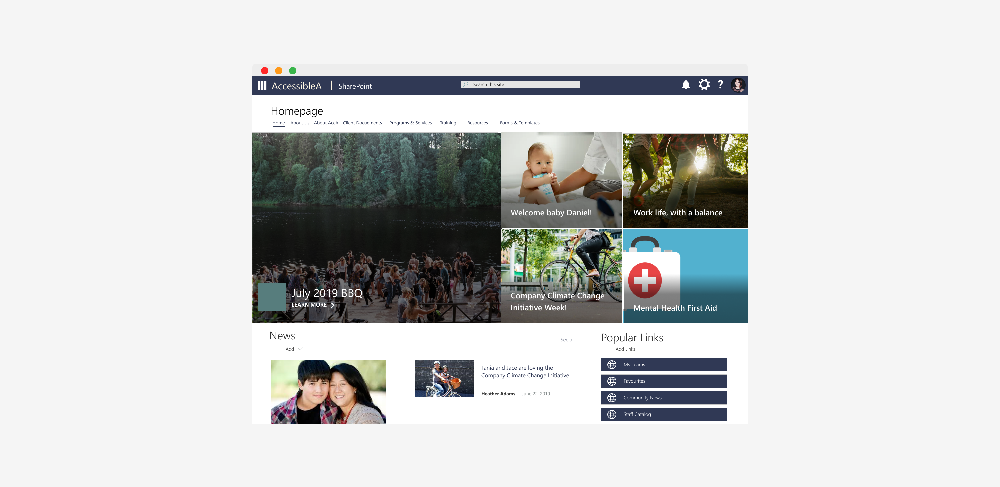

*The contents of this case study are based on personal experiences and professional expertise. Please note that certain details and information have been omitted or altered to protect the privacy and confidentiality of individuals and organizations involved.*

In 2014, the Government of British Columbia announced its Accessibility 2024 plan to make B.C. the most progressive province in Canada for people with disabilities.
For the 22% of Canadians over the age of 15 who live with at least one disability, the journey to use the web effectively has been one with many barriers – this act along with the many proposed around Canada will aim to make Canada an inclusive and barrier-free country.
My task was to create a Modern SharePoint experience following the Web Content Accessibility Guidelines (WCAG) 2.1 Level AA using out of the box SharePoint functionality. The ask from the client was to create site pages for the organization that form a cohesive brand and create an engaging environment.
Our goal for this project was to go beyond the acceptance criteria of meeting the Web Content Accessibility Guidelines (WCAG) 2.0 by June 2024 as required in the B.C. Accessibility Act and conform to the acceptance criteria of the 2.1 Level AA standards.
If broken down into points, our goal was quite simple:
As our project developed, we came up with some others:
As a UX designer, I led the design of the SharePoint pages between June and July 2019, collaborating with our business analysts, SharePoint developers, tech lead, and project manager. My role included leading and delivering the following deliverables:
At the start of our project we had to familiarize ourselves with the organization: their current site, organizational structure, governance, etc. This involved getting access to the client's system, doing a heuristic evaluation of their site, and defining clear success criteria that can be met in two months. We also had to understand the technological comfort level of our users to determine future training requirements and change management strategy.
The current brand colours were very similar to each other
and four out of five did not meet the WCAG acceptance criteria for contrast.
Multiple terms were used across the site but directed to
the same pages. This brings about a lot of confusion for the users.
Important information was hidden deep inside menus on multiple pages.
Relevant information takes up very little
real estate and some pages are mostly blank.
An outdated design that does not excite or engage it's users
Design Frankenstein: where features were
added together without thought on a whim.
I was impressed by the level of technological understanding and articulation of our client – it seemed like they had a solution in mind but needed our consultation on important design decisions. As this site acts as the single source of truth for the organization, it is an integral part of every division’s workflow.
“We need a mapping of current building blocks to modern experience and we’re looking for your expertise and UX recommendations.”
The client was also very honest about their addition of features on a whim which caused even power users to feel lost and frustrated. As we were left with the troubling discovery of being unable to identify the key design decisions that led to specific functionality, we were able to build an empathy with the client that made us recognize the lack of support we were offering to immature users or those with disabilities. The empathy that we built through our initial workshop was the beginning in creating an accessibility site.
For creating solutions, I used a ‘how might we…’ statement to reframe the problem we are trying to solve.
“How might we create an inclusive and engaging environment suitable for users with disabilities and power users.”
Before I could jump into designing the actual pages, it was important that we defined success for this project. To do so, I made a note of high value requirements that needed to be considered in order to make this project a success.
Colour contrast needs to pass WCAG 2.1 Level AA criteria.
Content needs to be display prominently to the users.

Power users' contact information easily findable
on the screen, so people know who to go to for help.
The Teams page should look similar to rest of the organization's
pages while still having a unique look so users can easily
identify what team they are looking at.
All links, text, and media should be focusable, reachable,
and escapable through the use of keyboard only.
Most recent/used documents should be obvious,
so users don’t end up using outdated documents or files.
Our redesign tackled three key pages to the organization and a recommendation for their mega menu.
Our homepage will be the first page that greets users. The user should be able to clearly introduce the organization to users and bring them up to the date with the latest news and projects that occur. Below are the components that make up the homepage. Each component must pass the applicable WCAG 2.1 Level A and Level AA acceptance criteria whether in desktop, horizontal mobile view, and vertical mobile view.
The most recent news and pinned updates should be
the first thing users see when they go to the homepage
so users can see the latest information.
The organization's most used links should be near the
top of the page for user's to quickly go where they need to.
Frequented sites are favourited so the user can access
it directly from the homepage. Users will be able to customize
these sites based on their role.
Popular documents used by the organization are also on
the homepage as requested by the client so users can view
the latest documents and know which projects are active.

Upcoming events for organization members should be
displayed to users. These include system outages, training events,
and stat holidays so users can find out what is coming up for the organization.

The client's main form of engagement is Twitter
so I added a Twitter feed to the homepage for users
to see any quick updates from social media.
A poll is added to promote engagement and gather feedback from users.
The Teams page is unique to each team in the organization and is visually unique to the rest of the sites because the content should only be supporting the people on the project team.
An introduction to the Team: their goals, project details,
and department for a user that might be new to
the team or curious about the team's goals.
Top used links used by the team. For example, applications,
spreadsheets, and documents frequently accessed by the team.
Team documents that are used by the team
frequently so users can avoid digging into the archives.

The latest activities from the Team so users
know which files were updated with the latest information.
Team events: meetings, project deadlines,
separate from the events of the organization.
A list of all Team members with a separate section for the team leads.
Each member has their full name and email, acting as a team directory.
The Staff page is organized to support projects or objectives within the organization. Unlike team pages, these staff pages serve as a sort of 'wikipedia' for users in the organizations that provide more detail about that status of a project or initiative.
An introduction to the purpose of the staff page.
As with the other pages, links are added to the
staff page for users to get to related information.
Contacts for page feedback are provided near the top of the page.
This is for users to report misinformation, broken links, or
suggestions for improvement to the page.
Related projects, docuements, or other resources used
to support this initiative are displayed on the page.
Each staff page provides a list of contacts working on the staff page.
A list of popular documents for the user to see the latest updates made by the staff.
To design for the client, I came up with three questions that needed to be answered:
The existing site was poorly engaging the users through an outdated design and a heavy navigation that often led to frustrations. Building upon the empathy and trust we've established; we took what was obvious to us and examined each of those assumptions to determine what might be difficult for users with disabilities.
To do this, I framed out each of the assumptions we typically make when designing a site and compared it with ways a person with disabilities might interpret it as.
Then I took the assumptions and risk areas and listed out all of the WCAG 2.1 Level A and Level AA acceptance criteria that would be applicable.
Taking in these considerations, I created my own SharePoint sites for these three pages and configured a component that would meet each of the client's requirements for what they wanted on the page. For each, I tested out how they stood up to the guidelines provided by WCAG 2.1 and only chose the components that would pass every acceptance criteria relevant to it.
As the central hub for information in the organization, the site held an incredibly large amount of links that saw use depending on who the user was. Through discussion, we were met with resistance on reorganizing the information architecture to something more simple as each stakeholder prioritized a subset of links. To put a visual to the difficulties a user might have navigating the site, especially on mobile, I mocked up the current state of the menu as a mobile menu.
After seeing the sheer amount of links they had, the organization asked us for recommendations on how to solve this problem. Knowing that they requested to keep their IA, I took to exploring and researching other organizations and how they implemented a mega menu. Some of these organizations that I took inspiration from where: Adidas, Home Depot, and Lululemon. By testing out what these organizations did, I mocked up examples of what the mega menu could possibly look like and how to reduce the amount of scrolling a user would have to search through on mobile. However, there was no out-of-the-box SharePoint mega menu that we could use and explained that this would take customization.
After the creation of these mock-ups, we had a second workshop with the client to present what we had discovered and created.
With visuals present, we were able to engage in discussions that brought up pain points we had not identified earlier on. Wrapping up the workshop phase of our project, the final step would be a write up of our formal recommendations and discoveries. In addition, we needed to address the concerns of our client which included:
For the final deliverable, I focused heavily on the client's desire to continue building their SharePoint site with UX best practices and included additonal information related to how they should do a heuristics evaluation, the steps I took to determining a colour scheme for their brand, and UX exercises that might be useful. Since the client asked for as much out-of-the-box functionality as possible, I broke down each page into what SharePoint components were used and added how I configured each of them so that it could be replicated.
This two month project felt like a whirlwind at times but at the end of it all, we delivered a detailed recommendation and strategy to improve the UX of their site. The final deliverable was met with positive feedback from our client with little to no additional feedback or questions on our recommendations. Since it was also built with primarily out-of-the-box functionality, the effort required by the developers will be reduced when it comes to styling customizations. Because we were able to hit our mark, our client will serve as a web accessibility leader in British Columbia by leading by example.
In the months after the end of my involvement on the project, we have since created a UAT environment for our client to migrate their content over to a modern SharePoint experience and build out the site as designed.


charlicheung.ux@gmail.com
This portfolio is best viewed on desktop
© charli cheung 2023